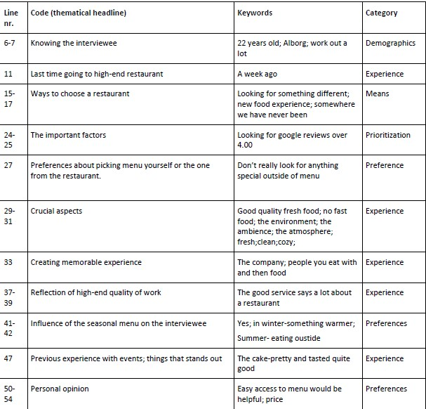
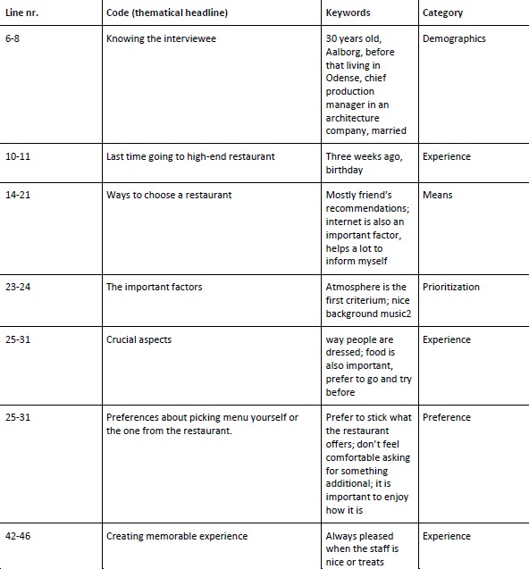
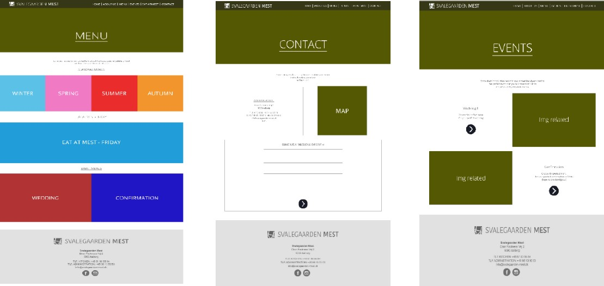
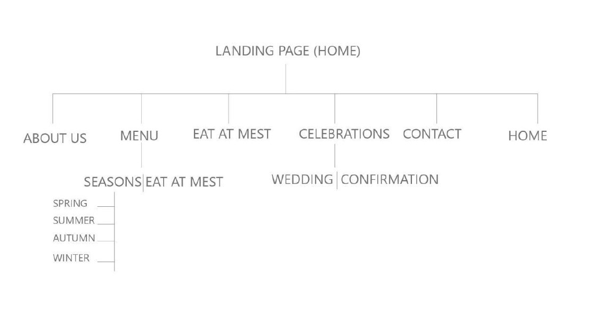
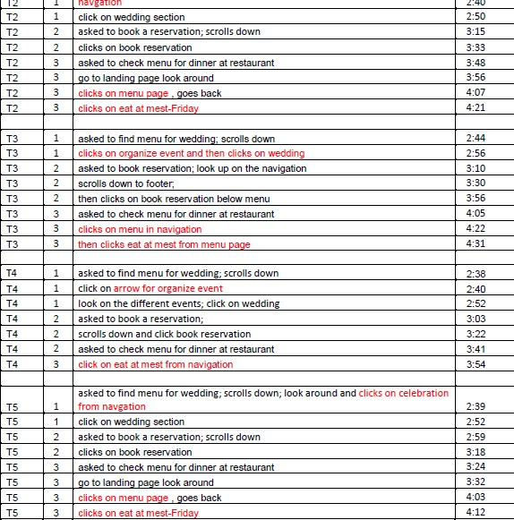

Problem:
The problems that Svalegaarden Mest is facing are that the site doesn’t fully represent the high quality of work and services. Also, they emphasize on their seasonal menus, but they all look standardised right now. Moreover, they don’t adapt to the seasons nor time of day which means that it doesn’t convey the feeling of unique experience. On the other hand, the problems for their users are all caused by the site’s bad information architecture. Currently, having their website as 2-in-1 results in mixed up information as well as confusing navigation.
In order to gather data for this project, me and my team performed interviews with the aim of getting information about people's experiences with restaurants. It was also looked for quantitave data to back-up our categorization
 When coming up with the design for this website,universal design principles have been used in order to provide best user-experience . Sitemap has also been created since it gives clear overview of the information architecture of the website.
 For the testing of the product, think-aloud test has been performed on four participants and the results have been analyzed and used for further improvement
